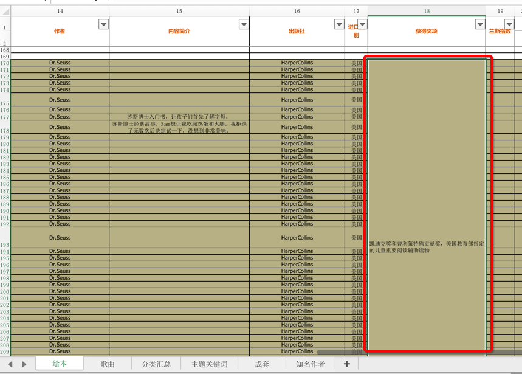
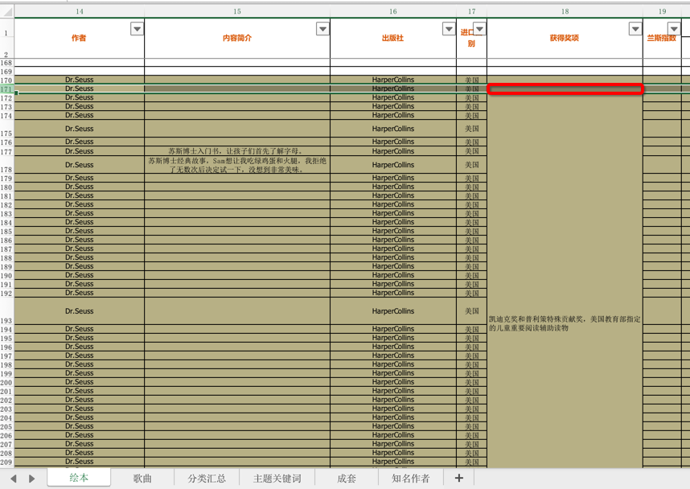
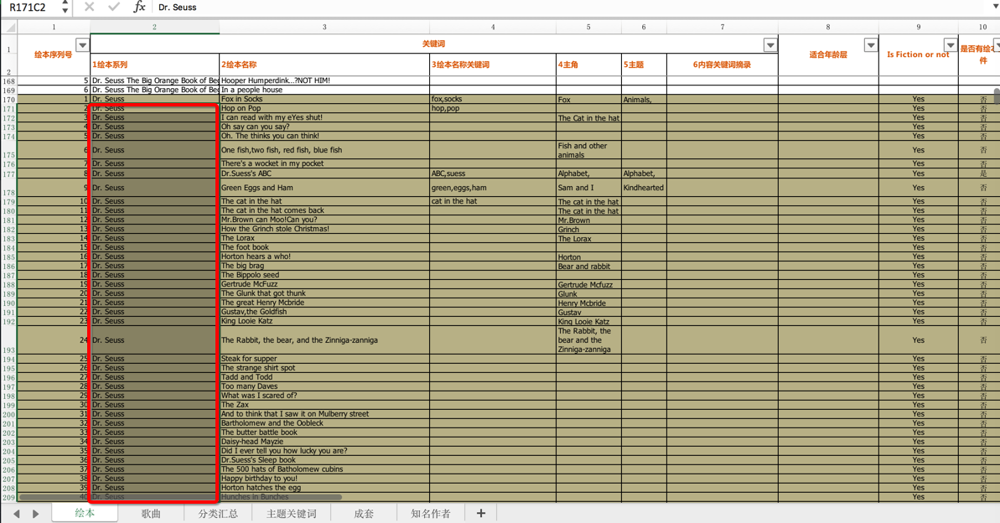
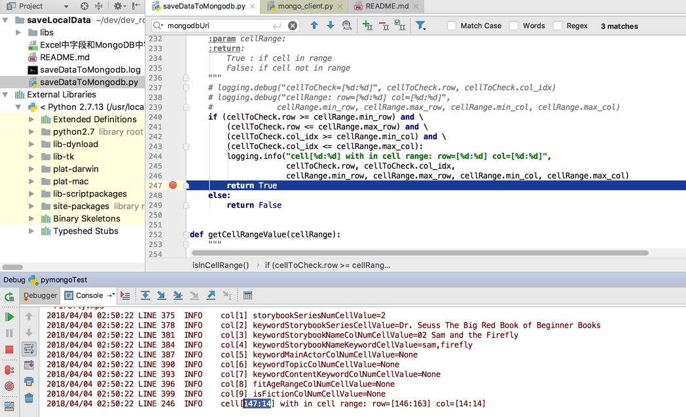
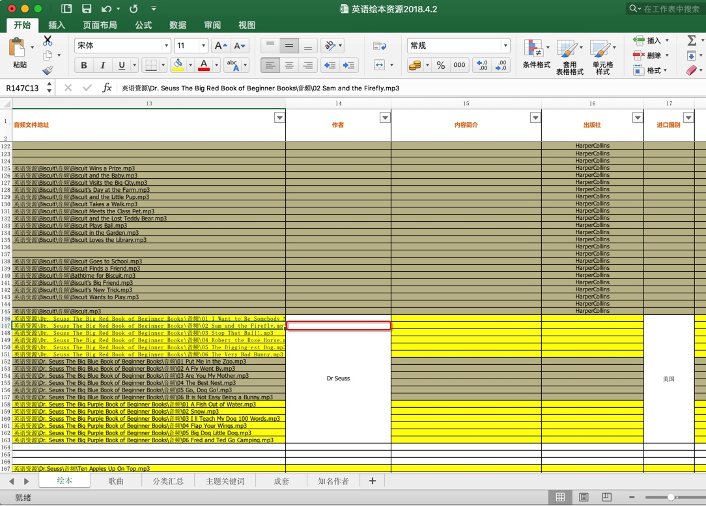
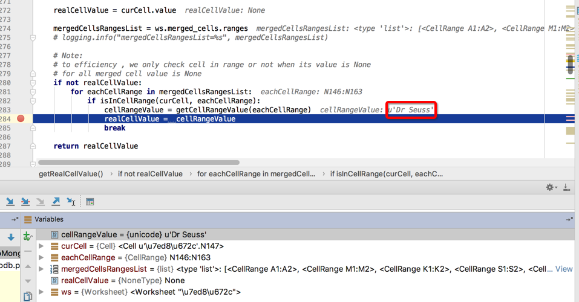

封装成函数
目前已把openpyxl常用的功能，封装成独立函数了。
最新完整代码详见：
https://github.com/crifan/crifanLibPython/blob/master/python3/crifanLib/thirdParty/crifanOpenpyxl.py
下面贴出部分代码供参考：
获取合并后单元格的原始值：isInCellRange + getCellRangeValue + getRealCellValue
背景：
用代码自动去判断，对于合并后的单元格中的内容：

（之前调试时发现的）自动检测出来后，对于后续的，单元格值是空：

但是属于同一系列的话：

那么后续单元格的值，在代码赋值时，也使用前面的值。
换句话说：
被合并后的单元的值，默认是空的
但是希望获取到被合并之前的值，即此处的合并后的左上角的第一个单元格的值
看看openpyxl是否能检测出来excel的单元格，是否是被合并的，且知道，具体合并了多少行（多少列）
这样才有利于后续单元格值为空时，使用前面的同系列的值
代码：
from openpyxl import Workbook, load_workbook
def isInCellRange(cellToCheck, cellRange):
"""
to check a cell whether in a cell range
:param cellToCheck:
:param cellRange:
:return:
True : if cell in range
False: if cell not in range
"""
# logging.debug("cellToCheck=[%d:%d]", cellToCheck.row, cellToCheck.col_idx)
# logging.debug("cellRange: row=[%d:%d] col=[%d:%d]",
# cellRange.min_row, cellRange.max_row, cellRange.min_col, cellRange.max_col)
if (cellToCheck.row >= cellRange.min_row) and \
(cellToCheck.row <= cellRange.max_row) and \
(cellToCheck.col_idx >= cellRange.min_col) and \
(cellToCheck.col_idx <= cellRange.max_col):
logging.info("cell[%d:%d] with in cell range: row=[%d:%d] col=[%d:%d]",
cellToCheck.row, cellToCheck.col_idx,
cellRange.min_row, cellRange.max_row, cellRange.min_col, cellRange.max_col)
return True
else:
return False
def getCellRangeValue(cellRange):
"""
get cell range value -> the top left cell value
:param cellRange:
:return:
"""
topLeftCell = ws.cell(row=cellRange.min_row, column=cellRange.min_col)
topLeftCellValue = topLeftCell.value
return topLeftCellValue
def getRealCellValue(ws, curCell):
"""
for openpyxl, to get real value from row and column
expecially for merged cell, will get its (same) value from top-left cell value
:param row:
:param column:
:return:
"""
realCellValue = curCell.value
mergedCellsRangesList = ws.merged_cells.ranges
# logging.info("mergedCellsRangesList=%s", mergedCellsRangesList)
# Note:
# to efficiency , we only check cell in range or not when its value is None
# for all merged cell value is None
if not realCellValue:
for eachCellRange in mergedCellsRangesList:
if isInCellRange(curCell, eachCellRange):
cellRangeValue = getCellRangeValue(eachCellRange)
realCellValue = cellRangeValue
break
return realCellValue
# parse excel file
wb = load_workbook(ExcelFullFilename)
logging.info("wb=%s", wb)
# sheetNameList = wb.get_sheet_names()
# logging.info("sheetNameList=%s", sheetNameList)
ws = wb[StorybookSheetTitle]
logging.info("ws=%s", ws)
# process each row in excel
# for curRowNum in range(realContentRowStartNum, ws.max_row + 1):
for curRowNum, eachRow in enumerate(ws.iter_rows(min_row=realContentRowStartNum)):
curRowNum += realContentRowStartNum
logging.info("-"*30 + " row[%d] " + "-"*30, curRowNum)
...
# authorColNumCellValue = ws.cell(row=curRowNum, column=AuthorColNum).value
authorColNumCellValue = getRealCellValue(ws, eachRow[AuthorColNum - 1])
logging.info("col[%d] authorColNumCellValue=%s", AuthorColNum, authorColNumCellValue)
# contentAbstractColNumCellValue = ws.cell(row=curRowNum, column=ContentSimpleIntroColNum).value
contentAbstractColNumCellValue = getRealCellValue(ws, eachRow[ContentSimpleIntroColNum - 1])
logging.info("col[%d] contentAbstractColNumCellValue=%s", ContentSimpleIntroColNum, contentAbstractColNumCellValue)
# publisherColNumCellValue = ws.cell(row=curRowNum, column=PublisherColNum).value
publisherColNumCellValue = getRealCellValue(ws, eachRow[PublisherColNum - 1])
logging.info("col[%d] publisherColNumCellValue=%s", PublisherColNum, publisherColNumCellValue)
...
可以检测到后续的，值是None的，处于被合并区域内的Cell单元格：
2018/04/04 02:50:22 LINE 246 INFO cell[147:14] with in cell range: row=[146:163] col=[14:14]

对应着147行，14列的：

然后就可以通过：
getCellRangeValue去得到合并区域的值==合并区域的最左上角（top left）的那个单元格的值：
